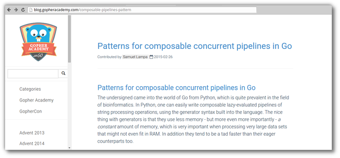
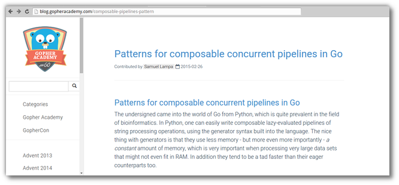

Patterns for composable concurrent pipelines in Go
I realize I didn’t have a link to my blog on Gopher Academy , on patterns for compoasable concurrent pipelines in Go(lang), so here it goes:

I realize I didn’t have a link to my blog on Gopher Academy , on patterns for compoasable concurrent pipelines in Go(lang), so here it goes:
